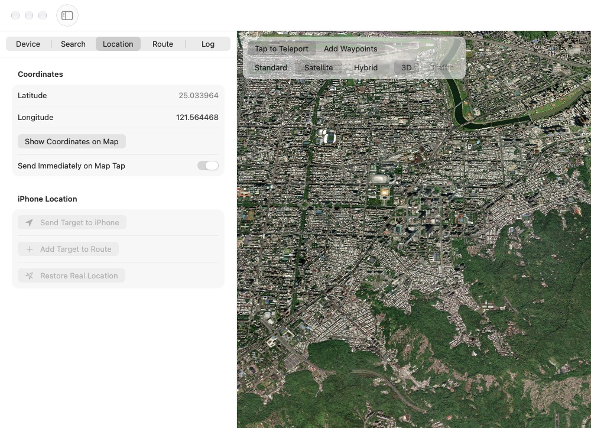
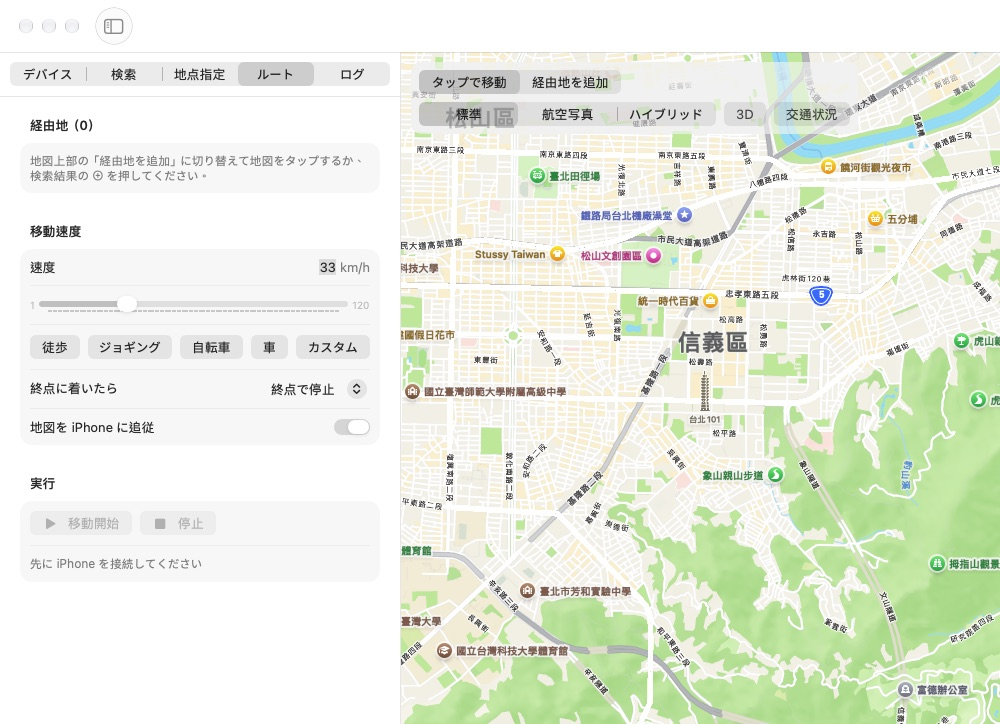

在地圖上點一下，或規劃一條多點路線，USB 連接的 iPhone 就會回報這個位置。原理和 Xcode 的「Simulate Location」相同，不需要越獄，也不需要 sudo。 Click the map or plan a multi-stop route, and the iPhone on USB reports that location. It uses the same service as Xcode's Simulate Location, with no jailbreak and no sudo.


在地圖上點選目標，可以立即套用到 iPhone，也可以直接輸入或貼上經緯度。Pick a spot on the map and apply it right away, or type or paste coordinates.
用店名或地址搜尋 Apple 地圖，以目前畫面為中心排序結果，一鍵設為目標或加入路線。Search Apple Maps by name or address around the current view, then set a result as the target or add it to a route.
依序走過多個路線點，終點可以停止、循環或來回往返，並顯示全程距離與預估時間。Travel through waypoints in order. At the end, stop, loop back or go back and forth. Distance and travel time are shown.
1–120 km/h，有步行、慢跑、單車、汽車快捷鍵，以及會記住數值的自訂速度。移動途中調整立即生效。1 to 120 km/h with walk, jog, bike and car presets, plus a custom speed that is remembered. Changes apply while moving.
標準、衛星、混合，另有 3D 建築與地形，以及即時路況。Standard, satellite and hybrid, with optional 3D buildings and terrain and live traffic.
繁體中文、简体中文、English、日本語，在 App 內切換，立即生效。Traditional Chinese, Simplified Chinese, English and Japanese, switchable in the app without a restart.
App 透過 stdin/stdout 的 JSON 和內附的 helper 溝通，helper 再用 DVT 的 LocationSimulation 服務設定位置。iOS 17 以上會自動建立 tunnel，iOS 16 以下改走 lockdown 服務。DMG 已內附 helper，不需要另外安裝 Python。 The app talks JSON over stdin/stdout to a bundled helper, which sets the location through the DVT LocationSimulation service. On iOS 17 and later it opens a tunnel automatically. On iOS 16 and earlier it uses the lockdown service. The DMG bundles the helper, so no Python install is needed.
xattr -dr com.apple.quarantine /Applications/GPSSpoofer.appgit clone https://github.com/wallyjue/GPSSpoofer.git
cd GPSSpoofer
./scripts/setup.sh # Python venv + pymobiledevice3
swift run # or ./scripts/package.sh for a DMG這個工具適合開發與測試定位相關的 App。許多 App 和遊戲的服務條款禁止偽造位置，使用前請確認，風險由使用者自行承擔。 This tool is meant for developing and testing location-aware apps. Many apps and games forbid spoofed locations in their terms of service. Check before you use it, and use it at your own risk.